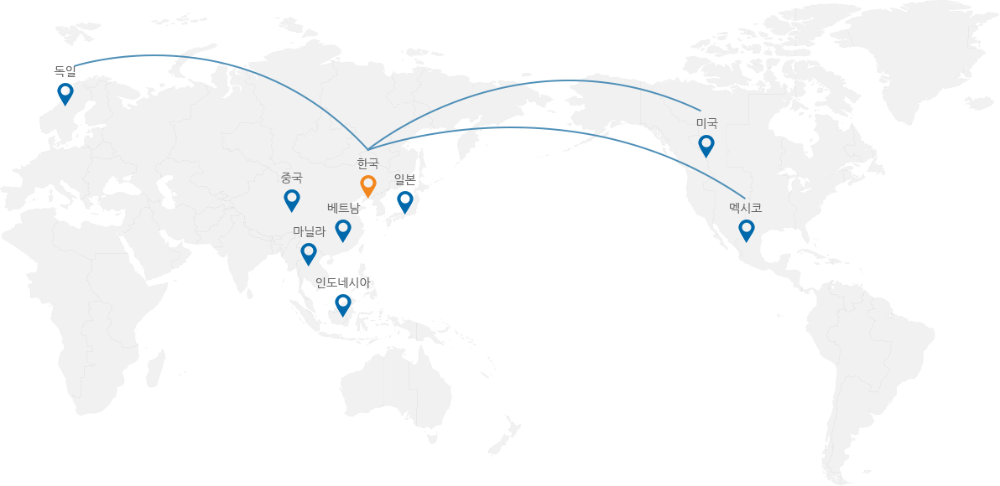
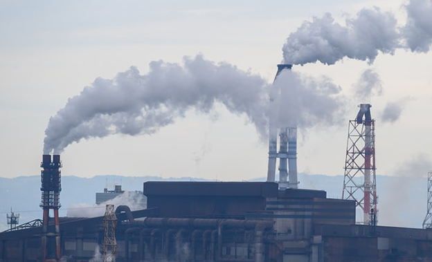
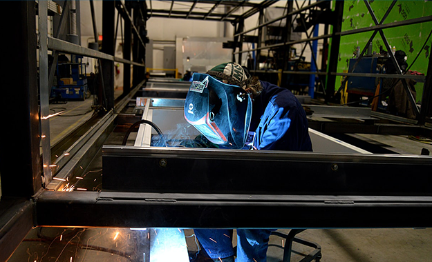
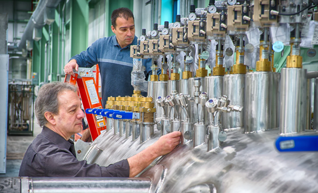

포스코케미칼는 고객의 요구에 능동적으로 대응할 수 있도록
한국, 중국, 미국,독일,인도네시아 등 전 세계 각국에 지점을 두어 글로벌 네트워크를 구축하고 있습니다.

posco group
최고의 품질을 설계
(제품,서비스,기능)
내화물
.
생석회
.
화학,탄소
세계최고의 품질
중국
- 중국 강소성 장가항 무역,도매 서비스
(ZPSS에 내화물 판매, 협력작업 및 건설공사) - 장가항포항불수강유한공사(약칭ZPSS)의
불수강(Stainless Steel)생산설비 안정조업 지원
-내화물 안정적 공급 및 노재 협력작업 수행
(포스코케미칼, 조선내화)을 통한 동반자적 관계발전 - 소싱품 품질검수 및 관리
중국 원료 및 제품시장의 정보 수집
중국 내 출자사 관리지원
인도네시아
- 인도네시아 제철,내화물,생산 서비스
(석회소성,내화상품,화성품 가공사업등 생산주력) - 인도네시아 일관제철소(PT.KRAKATAU POSCO)에
소요되는 고품위 생석회의 안정적인 공급생석회(CaO) - 인도네시아 일관제철소의 화성 공장에서 발생되는 부산물
(Tar 및 조경유)의 안정적 처리 및 고부가 가치화
나프탈렌, 카본블랙 오일, Crude Benzene, Wash Oil - 인도네시아 일관제철소 내화물 공급
내화물 축조 및 정비, 부정형 내화물 공장 건설
미국
- 아메리카를 대표하는 미국등 각국의
(제품,TSC,가공센터)를 유럽지역으로 생산 및 수출 - 이후 포스코는 TSC 디트로이트와 TSC 휴스턴을 설립했다.
TSC Detroit와 TSC Houston
두 지점 모두 모든 고객에게 EVI를 제공합니다.
-
EVI는 고객을 위해 계획, 개발 및 평가 하는
포스코는 우리가 아는 한 모든 고객을 기꺼이 지원합니다. - 포스코 아메리카는 파트너와의 최우선으로 생각합니다.
서비스를 포스코는 미주 전역에 센터를 설립했습니다.